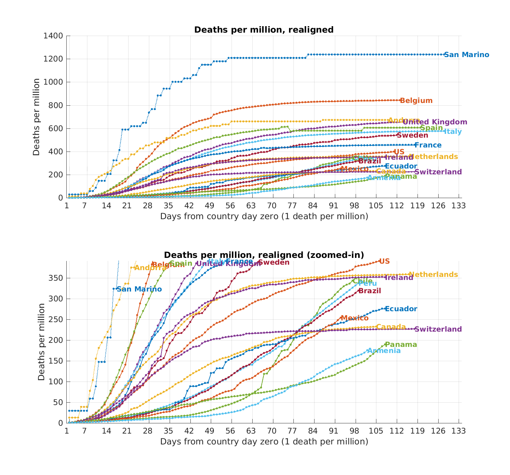

Realigned curves, 08.06.2020
Deaths per million, realigned such that each country's time zero is when 1 death per million was reached. We see the top 20 countries, and we zoom in to see better the bottom half.
The realigned curves show how countries cope compared to each other.